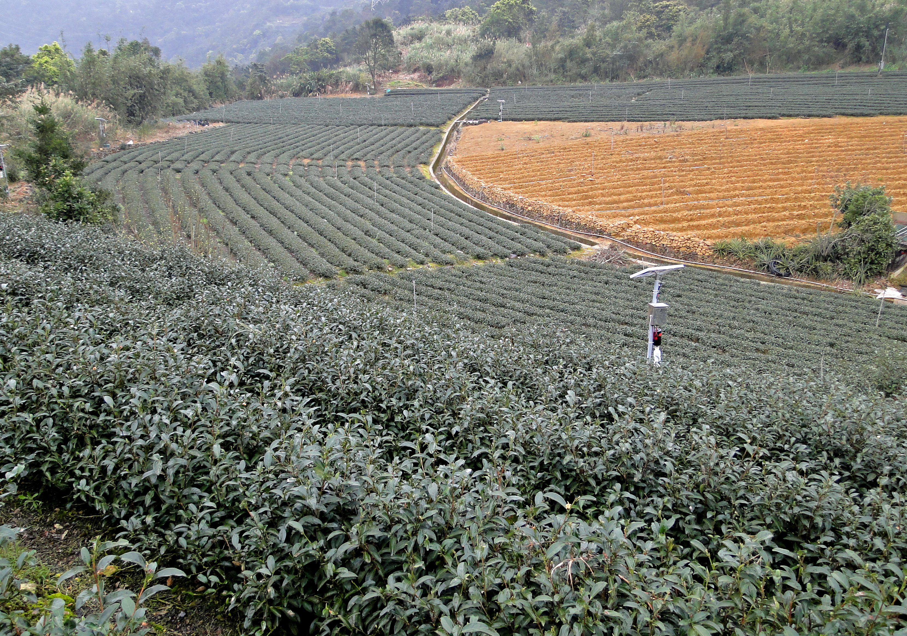

01
包種茶地景
坪林的包種茶與山谷地形密切相連，理解地景之後，才能把季節變化與產區條件往下擴寫。
Tea Culture
坪林的茶不只是一種飲品，更是結合了山川風土、百年製茶工藝與在地生活美學的文化結晶。從漫山翠綠的茶園梯田，到茶師布滿厚繭的手掌，每一瓣茶葉都訴說著這座山城與茶香共生的動人故事。
茶鄉實景
當您親自造訪這片土地，茶山山谷的薄霧、百年博物館的紅磚，以及老街茶行的陣陣烘焙香，將帶領您一步步走入茶鄉的靈魂深處。

坪林山谷茶景 望月型揉捻機
望月型揉捻機
 文山包種茶乾
文山包種茶乾
茶文化主題
01
坪林的包種茶與山谷地形密切相連，理解地景之後，才能把季節變化與產區條件往下擴寫。
02
包種茶製程涵蓋採摘、日光萎凋、室內萎凋、浪菁、發酵、殺青、揉捻與乾燥等工序，每個步驟都決定最後的口感層次。
03
茶文化在坪林不只存在於館舍與工坊裡，也延續在老街茶行、品茗空間與地方待客方式之中。
製茶工序
坪林包種茶的清香不是單一步驟決定的，而是從採摘到乾燥每一道工序累積出來的。 如果想更完整理解包種茶，可以先掌握住這八個步驟。
01
採取嫩葉，以一心二葉或一心三葉為主要標準，決定原料品質與後製的香氣方向。
02
將採下的茶葉放於日光下，使茶葉水分適度散失，啟動氧化反應，是製茶工序的第一步。
03
移至室內靜置，在適當的溫濕度控制下穩定萎凋，形成細緻的香氣前驅物。
04
以手翻炒茶葉再靜置，促進葉緣氧化，是包種茶製程中最關鍵的循環性操作步驟。
05
在適當環境讓茶葉進行輕度發酵，逐步形成包種茶的清雅花香與滑順口感。
06
以高溫快速終止發酵，鎖住香氣與風味走向。火候的精準度直接影響茶湯的清爽程度。
07
壓力揉捻讓茶汁滲出、茶葉捲曲，一步步塑造包種茶條索外形，也讓茶汁更易釋出。
08
以乾燥程序除去剩餘水分，讓茶葉穩定保存，完成可存放、可沖泡的包種茶成品。